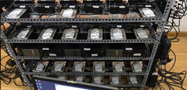
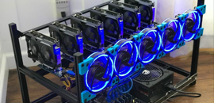

Bài viết mới

Có nên đào coin bằng HDD?
Cuối tháng 3 – đầu tháng 4, phong trào đào Chia coin (XCH) ở rộ vì nó có nhiều ưu điểm hơn so với việc đào coin bằng VGA hay Asic. Vấn đề bắt đầu nóng khi Chia coin từ giữa tháng 5 đã nổ ra nhiều cuộc tranh cãi về việc có ...
Các “điểm yếu” khi mining bằng 1050ti
1050ti có rất nhiều điểm yếu khiến cho các dân miner chuyên nghiệp thường dè chừng khi muốn đào bằng 1050ti. ...
Dag size là gì? Tại sao miner cần phải quan tâm?
Cơ chế Proof of Work (POW) đòi hỏi cần phải có những máy đào để chứng nhận những giao dịch trên mạng lưới của blockchain đó. Ví dụ ETH thì hoạt động trên blockchain đó. Ví dụ ETH thì hoạt động trên blockchain ...

Điểm mạnh khi mining bằng 1050ti
Vấn đề hiệu năng của con 1050ti là vấn đề mà nhiều người muốn né nhưng lại có một số thế mạnh khác khi mining cho người mới. Nếu bạn là người mới, chưa có kinh nghiệm thì 1050ti khá tốt dành cho bạn.